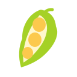
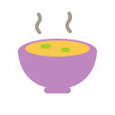
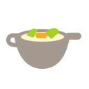
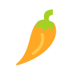

Taste Buddy · 디시 카테고리 아이콘해산물
생선 한 마리
육류
지방과 뼈가 보이는 고기 한 조각
채소/허브
잎이 달린 당근 한 개

두부/콩
콩알이 보이는 꼬투리 한 개
면/밥/곡물
수북한 밥 한 공기
만두/전/반죽
주름 잡힌 만두 한 개

국물/브로스
맑은 국물이 담긴 그릇 한 개
소스/글레이즈
소스 보트 한 개
구이/훈연
그릴 자국이 있는 구운 음식 한 조각

볶음/웍
볶음이 담긴 웍 한 개
튀김/크리스피
튀김옷을 입힌 닭다리 한 개
찜/브레이즈
대나무 찜기 한 개
생/절임/큐어
결이 드러난 생연어 한 조각
발효/장
뚜껑 덮인 옹기 한 개
유제품/치즈
치즈 한 조각

향신료/매운맛
굽은 고추 한 개
차가운 요리
얼음이 보이는 냉요리 한 그릇
디저트
과일을 올린 케이크 한 조각
음료/페어링
음료가 담긴 와인 잔 한 개